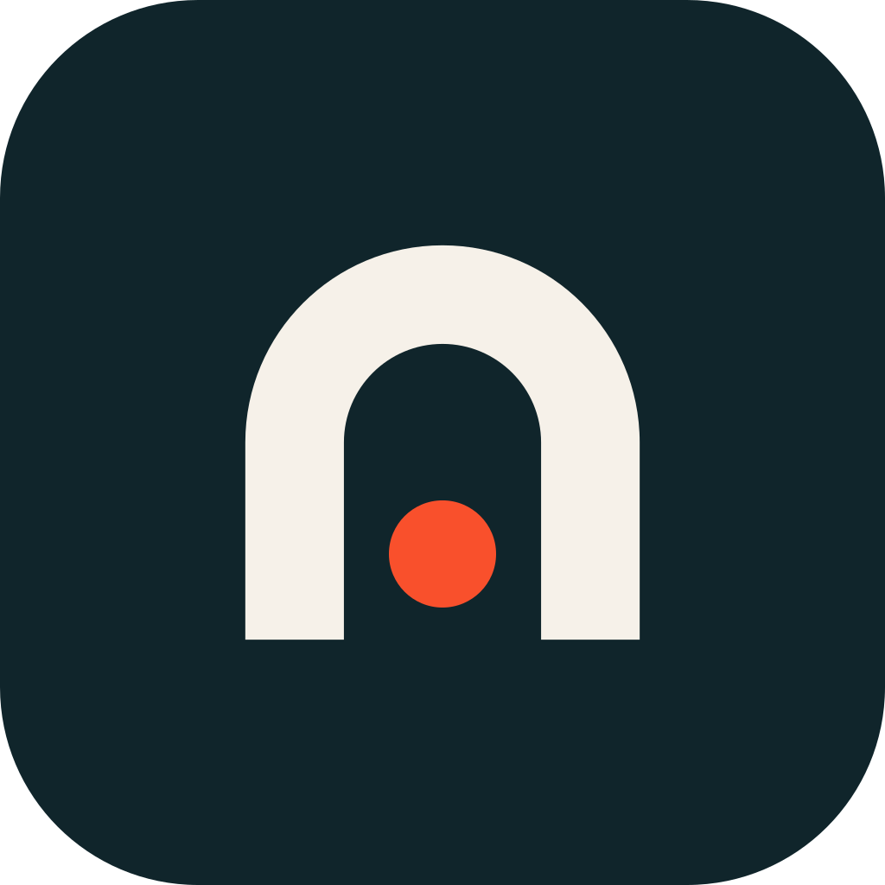
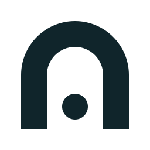
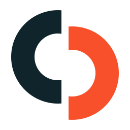
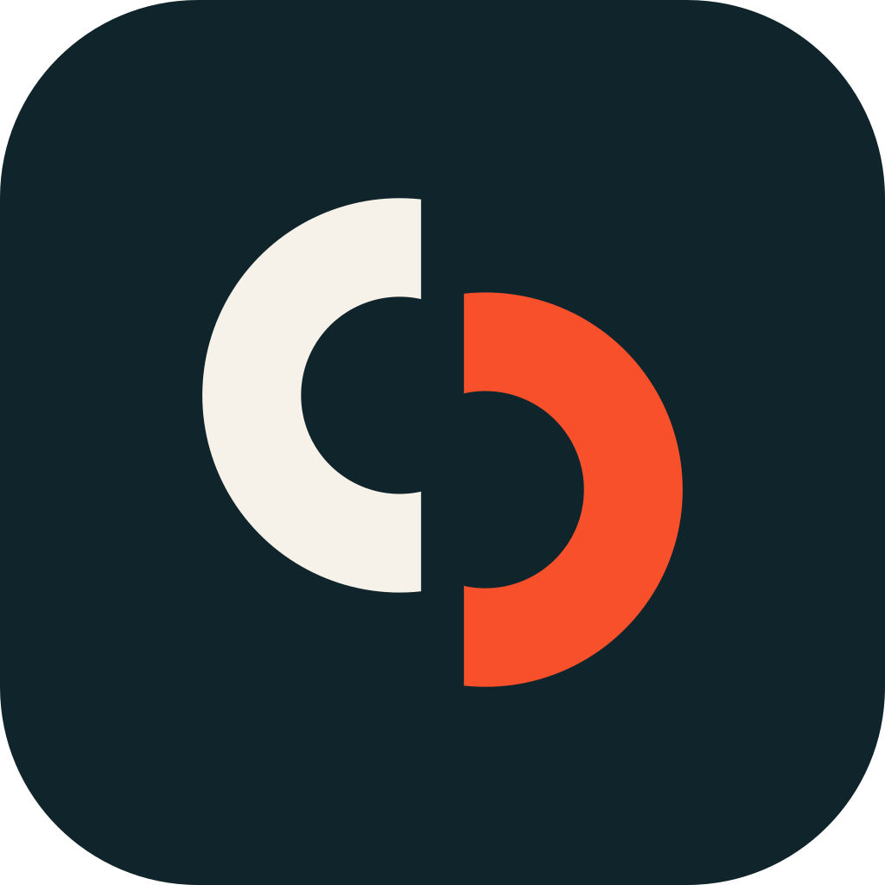
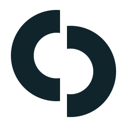
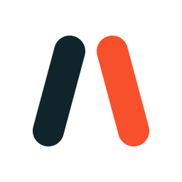
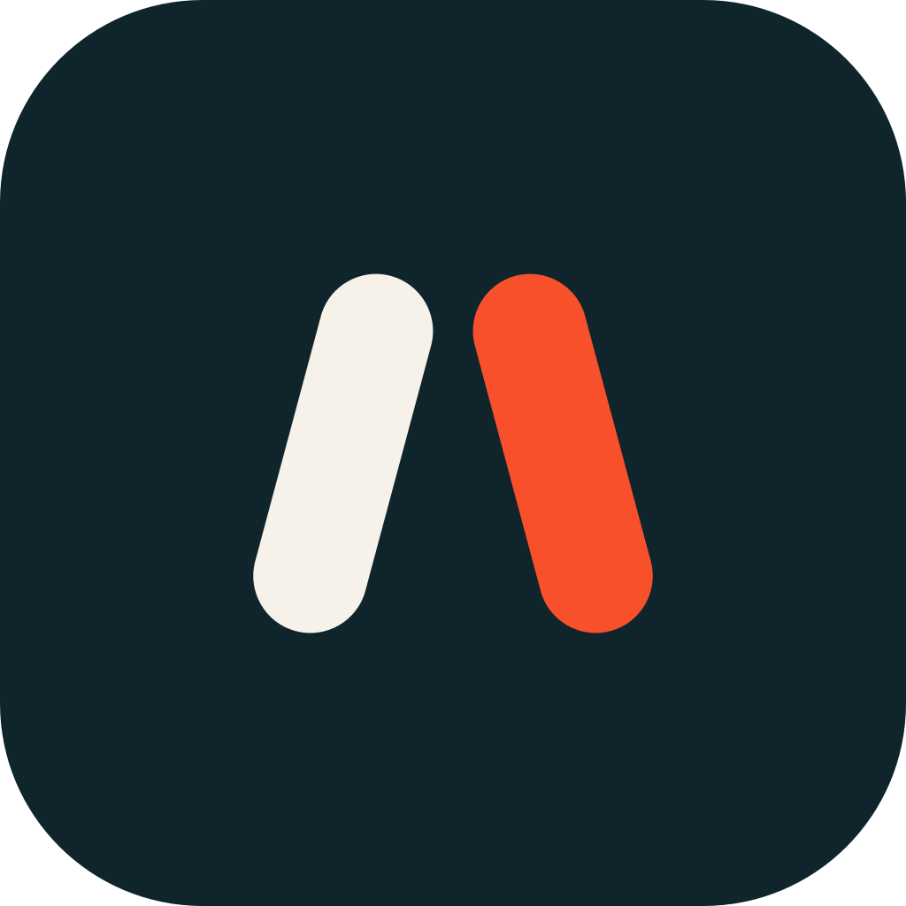
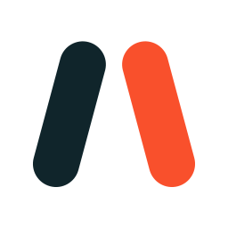

Same palette, same wordmark, three marks. Working name shown; the name is a swappable placeholder.
An arch is the door you step through to meet someone; the dot is you, arriving.


A circle cut into two offset halves. The gap is the bump; closing it is the match.



Two people leaning toward each other, not yet touching.


